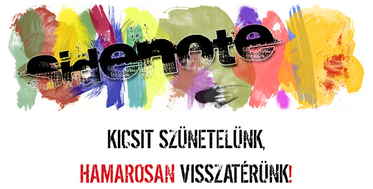
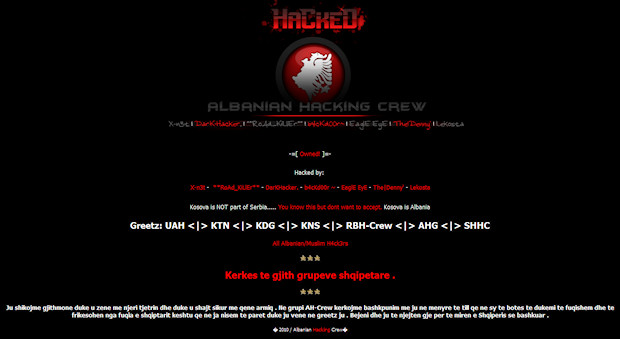
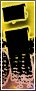
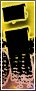
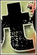
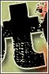

Akik az elmúlt napokban felkeresték a sidenote-ot, azok az alábbi képpel találták magukat szembe:

Ennek az az egyszerű oka, hogy az előző tárhelyszolgáltatónkat hétfő reggelre feltörték, köztük a sidenote-ot is. Nem ez volt az első eset, hogy hasonló történt, többször távolítottunk el vírust az oldalról, melyet nem mi helyeztünk el. Aztán valamikor még májusban volt egy két napos leállás, amikor a korábbi szolgáltatónk teljesen újrahúzta a rendszerét, mondván, hogy tök vírusos az egész, és hogy a továbbiakban ez ne így legyen. Ehhez képest hétfő reggel ez a kép fogadott engem itt a sidenote-on:

Gyorsan rendbe tettem az oldalt, minden scriptet leszedtem, felcsatoltam az ftp-t fájlrendszerként, lenyomtam rajta egy víruskeresést is, szóval megtisztítottam az egészet. Aztán gondoltam felhívom a szolgáltatót, hogy mi a helyzet. Meg akartam nézni az ő honlapjukat, de azon is ugyanez a „hacked by akárki” felirat fogadott. Gyorsan előbányásztam egy számlát, amin megvolt a telefonszám. Felhívtam és elmondtam, hogy mi a tényállás. Az egészben az a szép, hogy ha nem hívom fel őket, akkor lehet, hogy még órákig úgy maradt volna minden ahogy, ugyanis tőlem tudták meg, hogy feltörték őket és az általuk hosztolt oldalakat.
Ez finoman szólva is amatörizmus, szóval Reddel úgy döntöttünk, hogy mindezek után tárhelyszolgáltatót váltunk. Ezzel és különböző ügyes-bajos dolgok megoldásával telt el ez a néhány nap, de mostantól újra teljes gőzzel robog a sidenote.
A regisztrált felhasználóinkat sikerült átmenteni a régi oldalról, ők mindannyian új jelszavakat kaptak a mai délután folyamán.


 
 

 
 


{kind=link}
{kind=link}